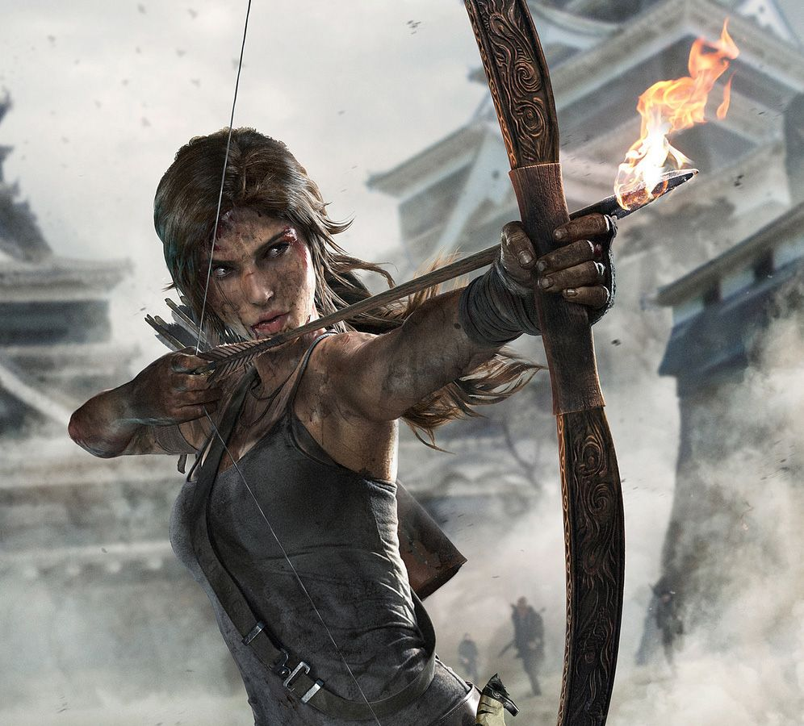
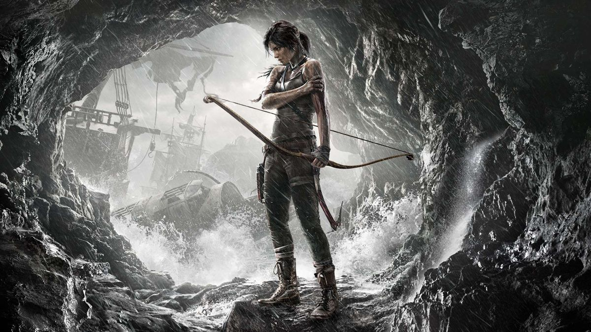

Uma heroína forjada pela aventura e pelo desconhecido

Lara Croft é uma arqueóloga britânica e exploradora renomada, reconhecida por suas expedições em locais históricos e por suas descobertas de artefatos antigos de grande relevância cultural. Criada originalmente para a série de jogos Tomb Raider, a personagem consolidou-se como uma das figuras mais influentes e emblemáticas da história dos videogames.
Desde jovem, Lara demonstrou grande interesse por história, arqueologia e civilizações antigas. Ao longo de sua trajetória, dedicou-se ao estudo e à exploração de sítios arqueológicos em diferentes regiões do mundo, enfrentando ambientes hostis, desafios físicos e enigmas complexos. Sua atuação destaca-se pela combinação de conhecimento acadêmico, habilidades estratégicas e capacidade de adaptação a situações extremas.
Ao longo de suas aventuras, Lara Croft construiu uma reputação marcada pela coragem, pela inteligência e pelo compromisso com a preservação do patrimônio histórico. Sua trajetória evidencia não apenas a busca por descobertas arqueológicas, mas também um processo contínuo de desenvolvimento pessoal e profissional.
Com o passar dos anos, Lara Croft tornou-se um símbolo de protagonismo feminino no universo dos jogos digitais e na cultura popular, influenciando a representação de personagens femininas em diferentes mídias, como cinema, quadrinhos e literatura. Sua história reflete a união entre conhecimento, determinação e espírito aventureiro, consolidando-a como uma referência no imaginário contemporâneo.
“A famous explorer once said, that the extraordinary is in what we do, not who we are.”
(“Uma exploradora famosa disse que o extraordinário está no que fazemos, não em quem somos.”)
Tomb Raider (2013)
"Run, you bastards! I'm coming for you all!"
(“Corram, seus desgraçados! Eu vou pegar todos vocês!”)
Tomb Raider (2013)

Você pode conhecer mais sobre a Lara clicando aqui.